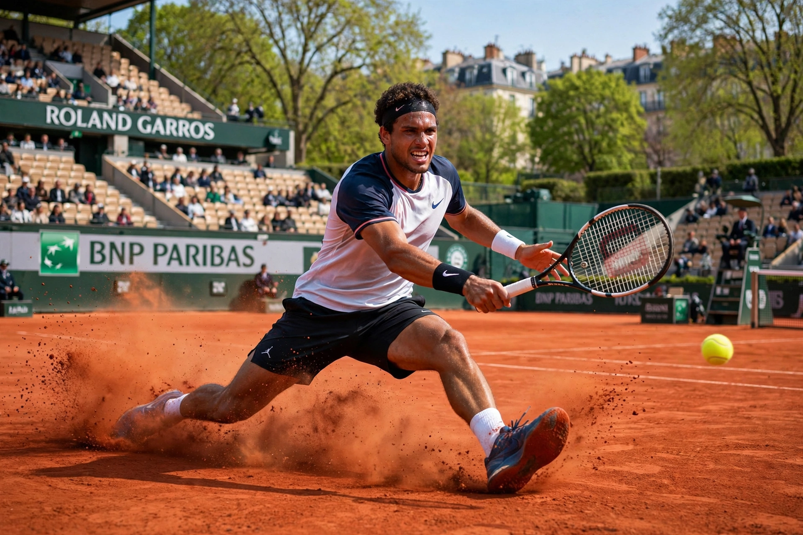

From Wikipedia, the free encyclopedia
| French Open | |
|---|---|
 A player sliding into a shot on the red clay of Court Philippe-Chatrier | |
| Founded | 1891 |
| Location | Stade Roland Garros, Paris, France |
| Surface | Clay (outdoor) |
| When | Late May – early June |
| Category | Grand Slam |
| Most men's titles | Rafael Nadal (14) |
The French Open, also known as Roland Garros after the stadium complex where it is played, is a tennis tournament held over two weeks in late May and early June at the Stade Roland Garros in Paris, France. Founded in 1891, it is the second of the four Grand Slam tournaments and the premier event played on clay courts. The slow, high-bouncing red clay rewards endurance, sliding movement and heavy topspin, making the French Open widely regarded as the most physically demanding of the majors.
The championships began as a French club competition and opened to international players in the 1920s; the Roland Garros stadium, named for a French aviator of the First World War, opened in 1928. Chris Evert won seven women's singles titles, a tournament record, and Björn Borg six men's titles. The event's defining figure is Rafael Nadal, whose 14 titles between 2005 and 2022 — and dominance on Court Philippe-Chatrier, where a statue of him now stands — are unmatched at any single Grand Slam event. Poland's Iga Świątek won four women's titles in the early 2020s, including three in a row from 2022 to 2024.
Spain's Carlos Alcaraz won the men's singles in 2024 and retained the title in 2025 after an epic five-set final against Jannik Sinner, one of the longest finals in the tournament's history. The 2025 women's champion was Coco Gauff of the United States. The main stadium, Court Philippe-Chatrier, gained a retractable roof in 2020 and hosts night sessions.
Categories: French Open | Tennis tournaments in France | Clay court tennis tournaments